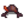

Diente de dragón
Ir a la navegación
Ir a la búsqueda
| Diente de dragón | |
| Se rumorea que son dientes de antiguas serpientes. ¡El esmalte está hecho de iridio puro!. | |
| Información | |
| Origen | Mazmorra del volcán |
| Precio de venta | |
El diente de dragón es un objeto especial que se obtiene en la Mazmorra del volcán, dentro de los restos de un dragón, o matando una acechador de la lava (con un 15% de probabilidades de que suelte el objeto).
Con cinco dientes de dragón puedes conseguir el brote de platanero del Comerciante isleño.
Recetas
| Imagen | Nombre | Descripción | Ingredientes | Origen receta | Precio de venta |
|---|---|---|---|---|---|
| Totem de teletransporte: Isla | Teletranspórtate directamente a Isla Jengibre. Desaparece tras usarlo. | Tienda del Enano por |
|||
| Mini-Forja | Ahora, puedes usar la forja enana desde la comodidad de tu casa. | No se puede vender |
Edificios
Se requieren diez dientes de dragón para comprar el Obelisco de la Isla en la Torre del Mago.
| Imagen | Nombre | Descripción | Coste | Tamaño |
|---|---|---|---|---|
| Obelisco de la Isla | Te teletransporta a la Isla Jengibre. | 3x2 |
Regalo
| Reacciones de Aldeanos
| |
|---|---|
| Le gusta | |
| Odia | |
Sastrería
Diente de dragón se usa en el carrete de la Máquina de coser para crear el  Sombrero de capa y espada.
Misiones
Si el jugador tiene en su granja un estanque de peces de mantarraya, necesitará un diente de dragón para aumentar su capacidad.
Historial
- 1.5: Introducido.